Photo via Mogami.
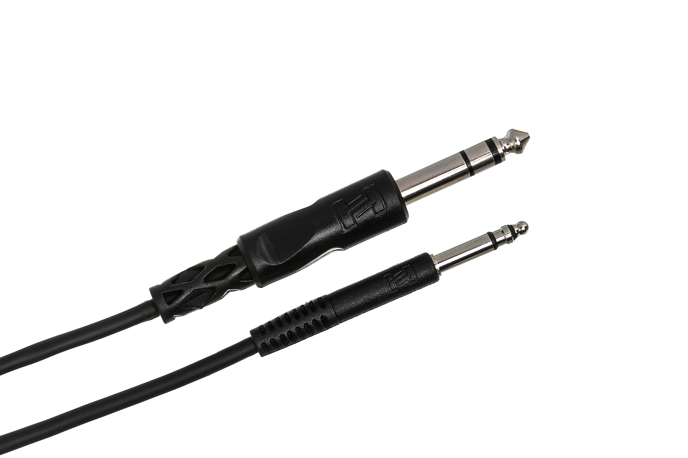
Photo via Hosa Technology.
A guide to recording in our studio. The first half walks the studio's gear and how it's all wired together (live room, control room, the path each signal takes from a mic on a stand to a track in Pro Tools). The second half pretends we're recording The Sound Below from front to back, with hands on the actual console.
MB2508 has two rooms: the control room (where the engineer sits at the Toft) and the live room (where the band plays, behind the internal door). The two rooms share a wall full of XLR feed-throughs and TRS pass-throughs that connect everything in one room to everything in the other. This part documents what's in each room and how it's all wired.
One rack against the wall. Five pieces of gear, top to bottom:
Every piece of gear in the rack plugs into the back of the Furman; the Furman plugs into one wall outlet. The conditioner filters electrical noise on the power line, protects everything plugged into it from surges, and gives the studio a single power switch that turns the whole rack on or off. This is the first thing turned on at the start of a session and the last thing turned off.
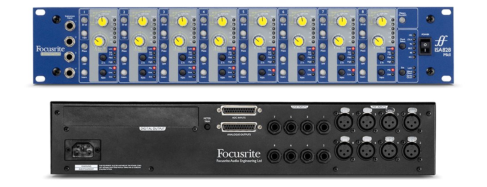
A preamp takes a mic-level signal (small, fragile, from a microphone) and lifts it to line level (large, robust, ready to travel a long cable to the next stage). You met one preamp already, the one inside the audio interface at every lab station; this is the same job done by a dedicated 8-channel unit with its own personality.
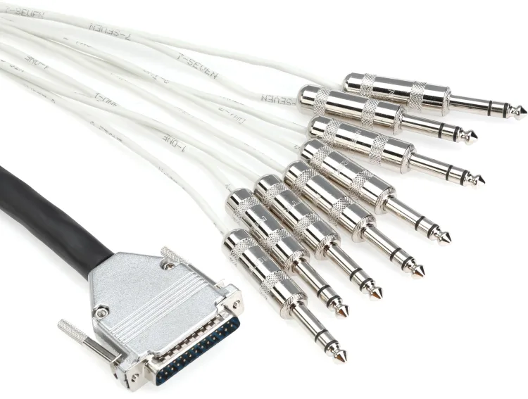
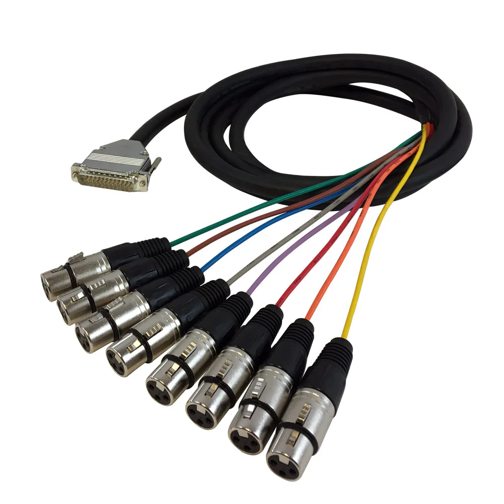
A DB25 (sometimes called DSUB-25) is a 25-pin connector that carries eight balanced audio signals on a single plug. Behind the racks in this studio, almost every multi-channel connection between two pieces of gear runs as DB25 to keep the wiring tidy. Fan cables (also called snakes) translate between DB25 and individual plugs at the gear that needs them. The two images above show the same idea in two flavors: DB25-to-8×TRS (used at the HDX, Toft submasters, and the patchbay) and DB25-to-8×XLR (used at the SSL G and M2000). These snakes are everywhere in the studio's internal wiring, but you almost never have to touch them once they're in place.
The Toft inputs are labeled MIC, but they accept line-level too: an XLR cable can carry mic-level or line-level (you read this in Lecture 2). With a line-level signal arriving at the Toft's MIC input, the Toft's onboard preamp doesn't need to amplify; the channel's INPUT GAIN knob becomes a trim, set low to fine-tune the level. The ISA has already done the gain work; the Toft's gain knob just nudges what's there.
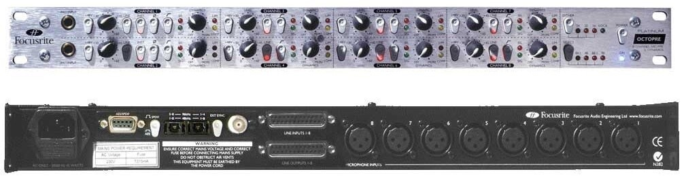
Same job as the ISA, slightly different sound, slightly different controls. Eight more preamp channels.
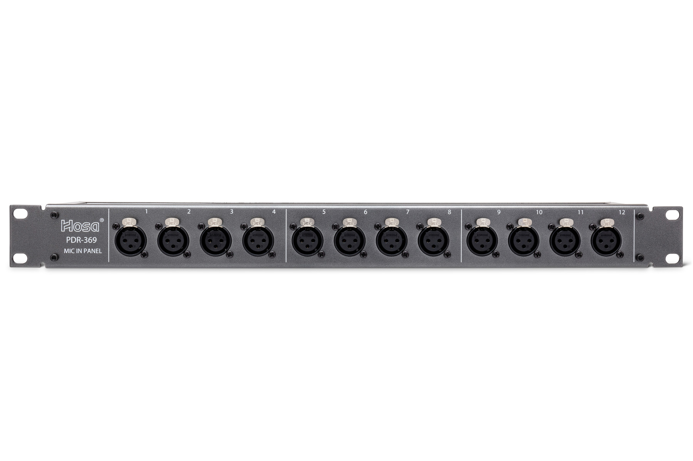
Two identical Hosa panels, one for each preamp. Each panel has 16 XLR female jacks across its front, numbered 1 through 16; jacks 1-8 are wired internally to its preamp (9-16 are unused, left in place in case the studio expands at some point).
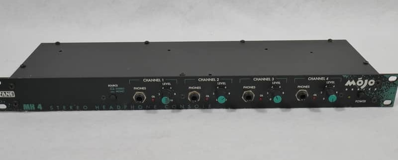
Performers in the live room wear headphones during tracking so they can hear themselves and the other tracks while playing. The MH4 takes one stereo cue mix from the control room and sends four copies of that same mix to four headphone jacks on its front, each with its own volume knob.
This is different from the live-sound setup you read about in Module 3, where each performer's monitor had its own custom mix on its own aux. Most sessions in our studio are small enough that everyone in the live room can work from a single shared cue mix; different players just need different volumes, which is what the MH4's four independent level knobs are for. (A larger studio might run a different headphone amp where each output gets its own custom mix; we don't.)
The Toft sits on a console desk in the control room. Built into the right end of the desk is a side rack carrying everything the Toft routes to or from. Five pieces of gear, top to bottom:
Same model as the live-room rack's. Powers everything in the side rack from one outlet, with one master switch. (The Toft itself has its own power switch and plugs into a separate dedicated outlet.)
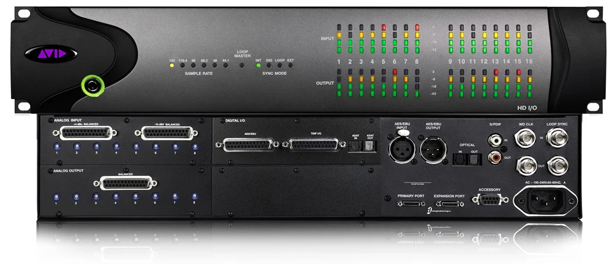
The audio interface connecting the Toft to Pro Tools. 16 analog inputs become Pro Tools record tracks; 16 analog outputs return Pro Tools playback to the console.
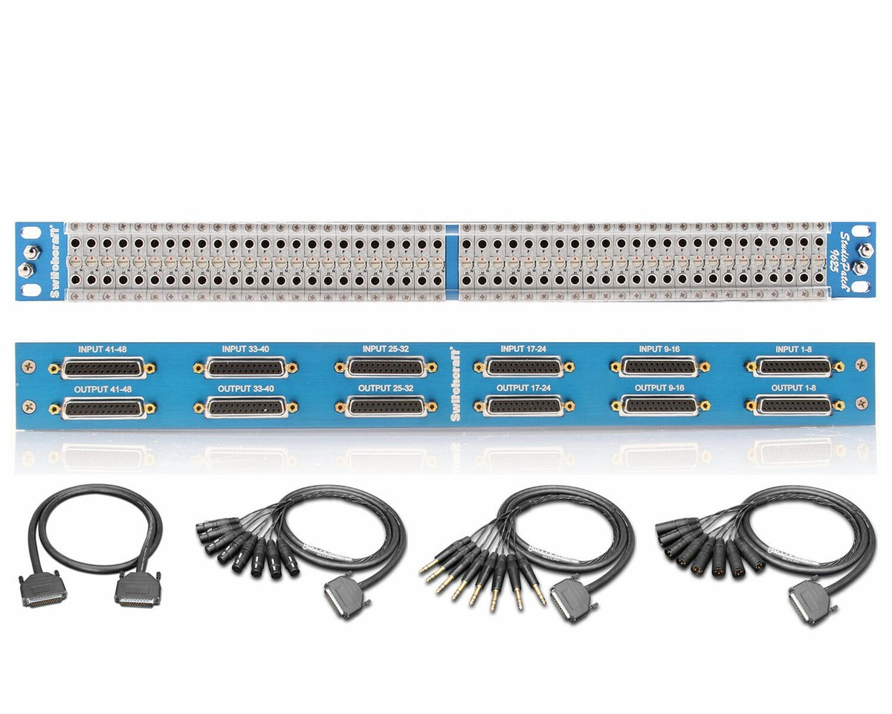
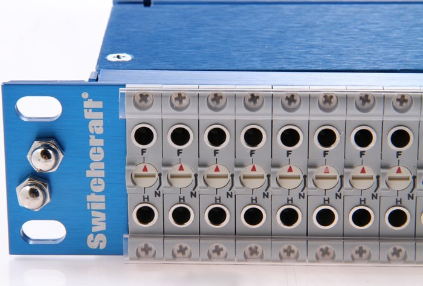
The flexibility layer. 96 TT jacks on the front, organized as 48 columns with one jack on top and one on bottom of each column. On the rear, 12 DB25 connectors (six labeled INPUT across the top row, six labeled OUTPUT across the bottom row). Each rear DB25 carries 8 channels. The top jacks on the front are wired internally to the rear INPUT DB25s; signals arrive from gear and appear there as sources. The bottom jacks are wired to the rear OUTPUT DB25s; signals leave there and travel out to gear as destinations. DB25 fan cables run from the rear to every relevant jack on the Toft and to every external processor in the rack.
Each of the 48 columns can be set to one of three normalling modes by turning a small screw on the front of the bay: full-normal connects top to bottom whenever no patch cable is plugged in (the signal flows through automatically); half-normal keeps the top-to-bottom connection unless a cable is plugged into the bottom jack alone (which breaks the connection and forces external routing); non-normal never connects top to bottom (the column is just two independent jacks). Different columns of our patchbay use different modes depending on what they carry.

TT stands for tiny telephone: a smaller version of the 1/4" TRS plug used in patchbays. A TT plug is about 4.4 mm across (vs. 6.35 mm for a regular 1/4" TRS) and carries the same tip-ring-sleeve signal. The smaller size lets a patchbay fit 96 jacks in a 1U rack space, which would be impossible with full-size 1/4" jacks.
TT cables are short (usually 1 to 3 feet long), white or color-coded for visibility. The engineer grabs one to make a connection on the front of the bay, runs it from a source jack to a destination jack, and unplugs it when done.
Each Toft insert is a single 1/4" TRS jack carrying both directions on the same cable (you read about this in Lecture 3): tip = send, ring = return, sleeve = ground. To put the send and return on the patchbay as separately patchable signals, the Toft's inserts connect to the patchbay rear via insert snakes: cables with 8 TRS plugs at the Toft end (each plug into one insert jack) and 2 DB25 plugs at the patchbay end (one DB25 carries the 8 SEND legs, the other carries the 8 RETURN legs). Inside the cable, the tip wire of each TRS is routed to a pin on the SEND DB25 and the ring wire is routed to a pin on the RETURN DB25; the split happens inside the cable.
This means each Toft insert occupies one column on the patchbay: the SEND leg lands on a rear INPUT DB25 pin and appears at the top jack of the column; the RETURN leg lands on the matching rear OUTPUT DB25 pin and appears at the bottom jack. The column is set to half-normal, so the SEND-to-RETURN connection is closed automatically (the insert loop is intact) unless someone plugs a cable into the bottom jack to break it and route external processing through.
With that in mind, the 48 columns of the patchbay are organized into four thematic blocks. You can find the configuration further down in this guide: jump to Patchbay configuration.
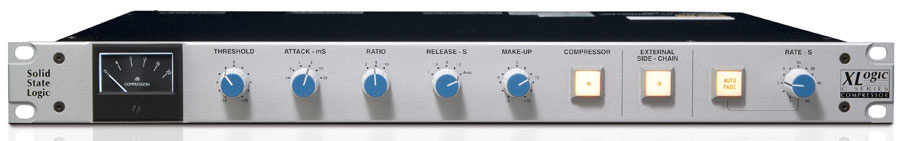
A stereo bus compressor: one of the most-used pieces of mixdown gear in modern studio history. Used to gently glue a stereo mix together by compressing its loudest moments by a few dB at a time. You've already met threshold, ratio, attack, and release in the Module 2 reading on dynamics; this is the analog hardware version of the same idea.
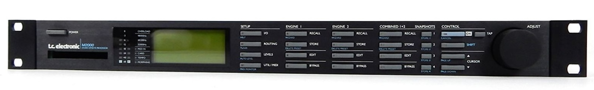
A studio-grade effects processor: reverbs of every flavor (hall, plate, room, spring), delays, chorus, flanger, phaser, pitch shift, and combinations of these. Mono input, stereo output. Whichever effect is loaded, the workflow is the same: a channel sends a copy of its signal to the effects processor via an aux send; the processor generates a stereo wet signal; that wet signal returns to the console on a separate pair of channels and joins the mix alongside the dry signal coming from the original channel.
The effects processor sits on Aux 3 by default. The TT cables that route it live on patchbay column 43 (Aux Master 3 source) connecting to columns 35-36 (the effects processor's mono IN and L+R OUT), with the unit's stereo output returning to channels 7 and 8 MON inputs on the Toft. Any channel that turns up its Aux 3 knob sends a copy of its signal to the effects processor and hears the processed result come back on channels 7-8 of the console.
Because the wet signal lands on actual channels (not on a stereo effects return), it can also be routed to a subgroup and recorded to Pro Tools: press the 1-2 (or 3-4, etc.) routing button on channels 7 and 8, and the chorus shows up as a separate pair of tracks in the DAW alongside the dry vocal.
Like the compression unit, the effects processor can be re-patched at the patchbay to do other jobs (a different aux send, an insert effect on a single channel, a parallel return on a stereo channel pair).
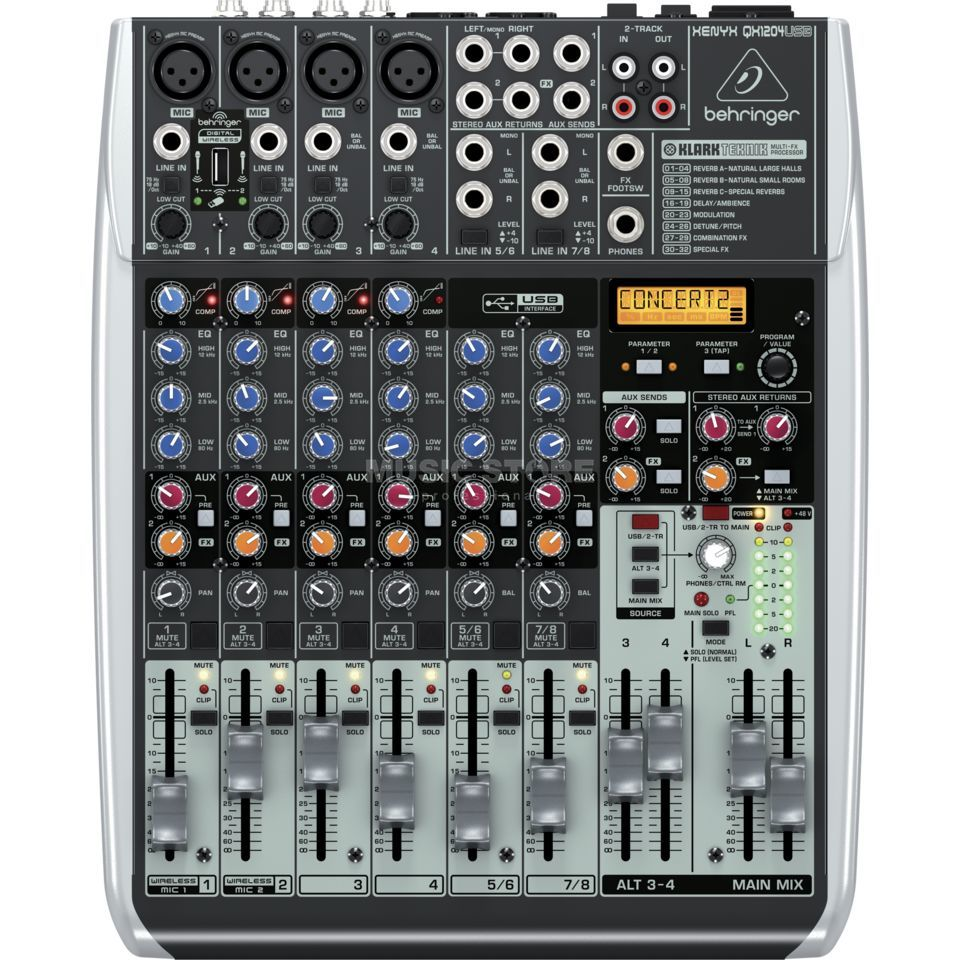
A small 8-channel mixer that sits on the console desk next to the Toft, used as a USB audio interface for student laptops. When a student wants to play their laptop into the Toft without going through Pro Tools and the HDX, they plug their laptop into the Behringer via USB and route the Behringer's outputs into the Toft.
The two output pairs let the student split their laptop signal into two stereo destinations on the Toft (for example: the main mix on 9-10 going to the master mix; alternate stems on 11-12 going to a different subgroup or a different headphone cue).
With every cable in place, here's a complete map of every jack on the back of the Toft and what's plugged into it. Three sections, each split into INS (signals arriving at the Toft), OUTS (signals leaving the Toft), and LOOPS (insert points where signal leaves and returns on the same jack).
| Jack | Connector | Source from | Carries |
|---|---|---|---|
| MIC 1-8 | XLR-F | Through-wall XLR-M from ISA 828 line outputs 1-8 | Line-level signals from the live-room rack's first preamp; Toft INPUT GAIN acts as a trim, not a true preamp gain stage |
| MIC 9-16 | XLR-F | Through-wall XLR-M from OctoPre Platinum line outputs 1-8 | Line-level signals from the live-room rack's second preamp; same trim-not-gain situation as channels 1-8 |
| LINE 1-8 | TRS | Empty | Intentionally unused: these jacks are parallel-wired to the submaster MONITOR RETURNS. |
| LINE 9-10 | TRS | Behringer Xenyx main outputs (L+R) | Student laptop's main mix from the Behringer USB interface on the console desk |
| LINE 11-12 | TRS | Behringer Xenyx alt 3-4 outputs | Behringer's second pair of outputs |
| LINE 13-16 | TRS | Empty | |
| MON 1-8 | TRS | Patchbay OUTPUT DB25 6 (columns 41-48 bottom row) | In-line monitor path on each channel; the default TT cables route the effects processor's L and R outputs into MON 7 and MON 8 |
| MON 9-16 | TRS | Empty |
| Jack | Connector | Source to | Carries |
|---|---|---|---|
| DIR O/P 1-16 | TRS |
| Jack | Connector | Send/Return path | Carries |
|---|---|---|---|
| INSERT 1-8 | TRS (tip=send, ring=return) | Patchbay INPUT DB25 1 columns 1-8 top (SEND) + OUTPUT DB25 1 columns 1-8 bottom (RETURN) | Per-channel insert loop; at rest the loop is closed (half-normal); plugging into the bottom column jack on the patchbay breaks the normal and forces external processing |
| INSERT 9-16 | TRS (tip=send, ring=return) | Patchbay INPUT DB25 2 columns 9-16 top (SEND) + OUTPUT DB25 2 columns 9-16 bottom (RETURN) | Same structure and normalling as channel inserts 1-8 |
| Jack | Connector | Source from | Carries |
|---|---|---|---|
| MONITOR 1-8 | TRS | HDX analog outputs 1-8 | Pro Tools playback returning to the console; parallel-wired to LINE 1-8 on the channel strips (which is why LINE 1-8 are kept empty) |
| STEREO FX 1-8 | TRS (tip=L, ring=R) | Empty |
| Jack | Connector | Source to | Carries |
|---|---|---|---|
| OUTPUT 1-8 | TRS | HDX analog inputs 1-8 | The 8 subgroup outputs feeding Pro Tools as 8 separate tracks |
| Jack | Connector | Send/Return path | Carries |
|---|---|---|---|
| INSERT 1-8 | TRS (tip=send, ring=return) | Patchbay INPUT DB25 3 columns 17-24 top (SEND) + OUTPUT DB25 3 columns 17-24 bottom (RETURN) | Per-subgroup insert loop; half-normal; identical structure to channel inserts |
| Jack | Connector | Source from | Carries |
|---|---|---|---|
| 2 TRACK RET 1+2 | TRS (tip=L, ring=R) | Empty |
| Jack | Connector | Source to | Carries |
|---|---|---|---|
| MASTER O/P L+R | TRS | Behringer Xenyx channels 1-2 | The stereo summed master mix |
| MAIN SPKR L+R | TRS | Control-room monitor speakers | Speaker feed from the master section's MONITOR LEVEL knob |
| ALT SPKR L+R | TRS | Empty (no alt speakers) | |
| AUX MASTER 1 | TRS | Patchbay INPUT DB25 6 (column 41 top) | Aux 1 send bus; exposed on the bay for ad-hoc patching |
| AUX MASTER 2 | TRS | Patchbay INPUT DB25 6 (column 42 top) | Aux 2 send bus; exposed on the bay for ad-hoc patching |
| AUX MASTER 3 | TRS | Patchbay INPUT DB25 6 (column 43 top); routed via 1 TT cable on the front to the effects processor IN | Aux 3 send bus; carries the studio's default reverb/effects send |
| AUX MASTER 4 | TRS | Patchbay INPUT DB25 6 (column 44 top) | Aux 4 send bus; exposed on the bay for ad-hoc patching |
| AUX MASTER 5 | TRS | Headphone unit stereo cue input (L), direct cable | Aux 5 sends the headphone cue L channel to the live-room headphones |
| AUX MASTER 6 | TRS | Headphone unit stereo cue input (R), direct cable | Aux 6 sends the headphone cue R channel to the live-room headphones |
| Jack | Connector | Send/Return path | Carries |
|---|---|---|---|
| MASTER INSERT L | TRS (tip=send, ring=return) | Patchbay INPUT DB25 4 column 25 top (SEND) + OUTPUT DB25 4 column 25 bottom (RETURN) | Master mix L insert loop; routed through the compressor unit via 2 TT cables on the front of the patchbay |
| MASTER INSERT R | TRS (tip=send, ring=return) | Patchbay INPUT DB25 4 column 26 top (SEND) + OUTPUT DB25 4 column 26 bottom (RETURN) | Master mix R insert loop; routed through the compressor unit via 2 TT cables on the front of the patchbay |
Every column of the Switchcraft 9625 in the side rack, organized by the four signal blocks introduced earlier. Within each block, the sub-tables follow the same INS / OUTS / LOOPS convention used in the Toft rear-panel chart: INS for signals arriving at the patchbay (top TTs, sources), OUTS for signals leaving the patchbay (bottom TTs, destinations), and LOOPS for insert points where the same column carries SEND on top and RETURN on bottom.
| Columns | Top TT (SEND) | Bottom TT (RETURN) | Normal |
|---|---|---|---|
| 1-16 | Toft ch 1-16 INSERT SEND | Toft ch 1-16 INSERT RETURN | half |
| Columns | Top TT (SEND) | Bottom TT (RETURN) | Normal |
|---|---|---|---|
| 17-24 | Toft sub 1-8 INSERT SEND | Toft sub 1-8 INSERT RETURN | half |
| Column | Top TT (SEND) | Bottom TT (RETURN) | Normal |
|---|---|---|---|
| 25 | Toft master INSERT L SEND | Toft master INSERT L RETURN | half |
| 26 | Toft master INSERT R SEND | Toft master INSERT R RETURN | half |
| Column | Top TT (source) | Normal |
|---|---|---|
| 33 | Compressor unit L OUT | non |
| 34 | Compressor unit R OUT | non |
| 35 | Effects processor unit L OUT | non |
| 36 | Effects processor unit R OUT | non |
| Column | Bottom TT (destination) | Normal |
|---|---|---|
| 33 | Compressor unit L IN | non |
| 34 | Compressor unit R IN | non |
| 35 | Effects processor unit IN (mono) | non |
| 36 | Empty | non |
| Columns | Top TT (source) | Normal |
|---|---|---|
| 41-44 | Toft Aux Masters 1-4 | non |
| Columns | Bottom TT (destination) | Normal |
|---|---|---|
| 41-48 | Toft ch 1-8 MON inputs | non |
Seven TT cables sit on the front of the patchbay by default, routing the two outboard processors into their default positions. They can be pulled at any time to free up the compressor or effects processor for other use during a session.
| TT cable | From (top TT) | To (bottom TT) |
|---|---|---|
| 1 | Col 25 (Master INSERT L SEND) | Col 33 (Compressor L IN) |
| 2 | Col 33 (Compressor L OUT) | Col 25 (Master INSERT L RETURN) |
| 3 | Col 26 (Master INSERT R SEND) | Col 34 (Compressor R IN) |
| 4 | Col 34 (Compressor R OUT) | Col 26 (Master INSERT R RETURN) |
| 5 | Col 43 (Aux Master 3) | Col 35 (Effects processor IN) |
| 6 | Col 35 (Effects processor L OUT) | Col 47 (ch 7 MON input) |
| 7 | Col 36 (Effects processor R OUT) | Col 48 (ch 8 MON input) |
Five hands-on walkthroughs, all starting from the same setup: one singer in the live room with a vocal microphone on a stand. The starting state below gets that mic from the live room onto a Toft channel; once it's done, every recipe assumes it. Work through the recipes in order on a first pass, or jump to whichever one you need on a later visit.
Before any recipe, set up the room and the gear so a signal is moving. Do this once.
From here, every recipe below builds on this starting state.
The Toft is summing channel 1 into the master mix (you hear it in the room), but it's not yet being recorded. The recording path is the DIR. O/P (direct output) on the back of channel 1, which is wired to one of the HDX audio interface inputs (see the Toft rear-panel chart above for exactly which one).
The vocal is now on its own track in Pro Tools, separate from the master mix the engineer hears in the room. Keep the channel 1 fader at unity during tracking and set the recording level with the ISA 828 gain knob; that way the recording is committed at a known level regardless of any fader rides the engineer makes for monitoring.
The singer needs to hear themselves while tracking, plus any playback (a backing track, a previously recorded guide, a click). The studio's headphone path is hard-wired: Aux 5 (L) and Aux 6 (R) on the Toft run direct to the Rane MH4 headphone amplifier in the live room. Building the cue mix is a matter of deciding what each channel sends to Aux 5+6.
The cue mix is now independent of the control room mix: the engineer can mute a channel in the room, ride a fader, or solo something for inspection, and the singer hears none of it. If a second player joins on a later take (a guitarist tracking with the vocalist, for example), plug their headphones into Rane MH4 jack 2 and set jack 2's level knob to their preference. Everyone in the room shares the same blend, with their own volume knob.
By default, the SSL XLogic G compressor sits on the master mix INSERT path: every signal the master section is summing runs through the compressor on its way to the monitors. The compressor's IN button is what engages it; with IN out, the signal passes through unprocessed.
This is the standard use of a bus compressor: gentle glue, a few dB of reduction on peaks, the listener barely notices on its own but hears a difference when you bypass it. Press IN out at the end of the session to leave the compressor in its rest state.
The SSL is patched to the master mix by default, but the same unit can be moved to any channel insert by repatching at the bay. To put it directly on the vocal (a one-channel mono compressor on the vocal signal), use the L side of the SSL only.
The R side of the SSL is unused in this configuration. That's fine: a stereo unit can do mono duty as long as you only drive the side you patched. When the session ends, pull the two new TT cables and return the original four cables to their default positions to leave the studio as it was.
The TC Electronic M2000 effects processor sits on Aux 3 by default: any channel that turns up its Aux 3 knob sends a copy of its signal to the M2000, and the M2000's stereo output returns to channels 7 and 8 MON inputs on the Toft. To add a chorus to the vocal, load a chorus preset and turn up channel 1's Aux 3.
To record the chorus to its own pair of Pro Tools tracks alongside the dry vocal, press the 1-2 routing buttons on channels 7 and 8 to send them to subgroup 1-2, and arm two new tracks in Pro Tools whose inputs are the subgroup 1-2 direct outs. The dry vocal is captured on Recipe 1's vocal track; the wet chorus is captured on its own pair.
Same band, same twelve signals, same console, very different goal. The band is now in a studio's live room; the engineer is in the control room behind the glass; the audience is gone. The output isn't a real-time mix for someone listening tonight. It's a multitrack recording: each instrument captured on its own track in Pro Tools, to be edited and mixed later in front of the screen, days or weeks after the band has gone home.
The reality of studio work, almost everywhere, is that the band does not play together all at once. Studio recording proceeds by tracking: one source or one section at a time, layering the recording in passes. The typical order is rhythm section first (drums, then bass), then the harmonic and rhythmic layers (guitar, then keys), and finally vocals on top. The drummer plays to a click track in headphones; the bassist plays to the drum recording; the guitarist plays to drums and bass; the keyboardist plays to drums and bass and guitar; the vocalist sings to the full instrumental band. Each player performs in dialogue with whatever was captured on the previous days. By the end, the band has made an arrangement together that they never played together in the room.
The reasons are practical and artistic. Practically: isolating one source at a time means no bleed (a kick mic picks up only the kick, not also the bassist's amp through the open door). Artistically: the band can take many takes of each part without anyone else getting tired, edit between takes, fix what doesn't work, and use the studio as a composition tool. The studio session is less like a performance and more like a slow, patient assembly.
This re-shapes everything about how the console gets used. The master mix is now what the engineer monitors in the control-room speakers (the speaker output of the master section feeds them, so the engineer hears whatever's being captured plus whatever's playing back from Pro Tools). Each tracking pass only uses the channels for the source being recorded that day; the rest of the channels carry previous days' takes coming back from Pro Tools. The monitor-mix-per-performer picture from Scenario 1 collapses to a single cue mix for whoever is in the live room. And the I/P REV button, instead of being a once-at-the-end move, becomes part of the daily routine.
Studios solve the source-to-console problem differently from live venues, because a studio is built for repeated use across many different sessions and needs more flexibility than a touring band's stage box. Our studio (MB2508) actually has two parallel chains from the live room to the Toft: one for the mic-level sources (vocals, guitar amp, bass, drums) and a shorter one for the keyboardist's line-level sources. The mic-level chain is walked first, in four stages.
In Monday's reading, the channel strip's INPUT GAIN knob was the place where the preamp lived: a red knob at the top of each strip, setting how much amplification the mic-level signal received before passing through the rest of the channel. That description fits any console where the preamp is on board.
In our studio, the preamp has been moved outside the console. The ISA 828 and the Octopre do the mic-level-to-line-level boost before the signal ever reaches the Toft. By the time a channel sees the signal, the gain has already been set on the external preamp's front panel; the Toft's INPUT GAIN knob becomes a secondary trim (typically left at unity, or used for fine adjustment), and the LINE button at the top of the strip is engaged so the channel listens to the LINE jack on the back instead of the MIC jack.
Why bother moving the preamp out? Two reasons. The first is sound: external preamps like the ISA 828 are designed and built to a higher specification than the preamps inside a project-studio console; they impart a particular character that's part of the studio's sonic signature. The second is flexibility: with the preamp separate from the console, the engineer can choose a different preamp per source per session (one preamp for vocals, another for drums, a third borrowed from a friend just for this take), without being locked into whatever the console happened to ship with.
The two preamps in MB2508 don't sound the same. The Focusrite ISA 828 ("the good one") is a transformer-coupled design, clean and detailed, with a warmth on transient material that engineers reach for on lead vocals and intimate sources. The Octopre Platinum ("the cheaper one") is solid-state, more workmanlike, perfectly usable on louder sources where the preamp's character is less audible against the source's own loudness.
Because the patch panel's odd jacks are hard-wired to the ISA and the even jacks are hard-wired to the Octopre, which jack you plug a mic into is a decision about how that mic will sound on the recording. The engineer doesn't have a "preamp select" switch; the choice gets made by which jack the cable goes into. The conventional move is to send the most exposed, most-listened-to sources through the ISA (vocals first, then stereo pairs, then any solo instrument the song depends on) and route the loud workhorse sources through the Octopre (kick drum, guitar amp, anything in a busy mix).
On a tracking day, the engineer has eight patch panel jacks to allocate. With only four mics active (drums), or two (bass DI + bass amp), or one (vocals), the eight jacks are more than enough. The constraint is real only when many mics need to be on at once, and even then the engineer can swap patches mid-session.
The chain above describes how the eight mic-level signals get from the live room to the Toft. The keyboardist's four signals don't follow it. They're line-level at the source, so they don't need the patch panel or the external preamps; sending them through that chain would just add unnecessary conversion stages and waste two preamp inputs on a signal that's already at the right level.
Instead, the keyboardist's outputs go to a small two-channel audio interface that lives in the control room, not in the live room. The two interface inputs accept her 1/4" TRS line-level signals directly; the interface's two analog outputs are wired into Toft channels 15 and 16 on the LINE jacks at the back of the console. From the Toft's point of view, two channels on the right end of the desk are reserved for the keyboardist, permanently fed from this interface.
Two interface inputs and four line-level sources looks like a mismatch, and it would be if the band were playing together. With the studio's tracking workflow it isn't: the keyboardist tracks her stage keyboard on one day and her laptop on another, never both at the same time. On keys day, her two keyboard outputs (L and R) cable into the interface; Pro Tools records two tracks (Ch 15 and Ch 16). On laptop day, those same two interface inputs receive the laptop's two outputs instead; Pro Tools records two more tracks (again Ch 15 and Ch 16, but a different take and a different source). Across the two days, four discrete tracks land in the session even though the chain has only two channels at any moment.
Across the full MB2508 setup, the band's twelve signals reach Pro Tools by two completely separate paths. The eight mic-level signals take the long path: patch panel in the live room, into the rack-mounted preamps, through the wall to the Toft's LINE inputs at channels 1 through 8 (the channel-to-source mapping shifting each tracking day with the preamp allocation). The keyboardist's four signals take the short path: straight to the interface in the control room, into the Toft's LINE inputs at channels 15 and 16 (permanently). The two chains never share a piece of gear past the source.
Why two chains? The mic-level signals need preamps (to lift them up to line-level) and benefit from being shaped by the external preamps' character; the line-level signals need neither. Forcing them all through the same chain would help nothing and would cost two preamp inputs per session on signals that don't want preamping. The studio uses the right tool for each kind of source.
The studio channel map is shaped by the two chains. Channels 1 through 8 carry the mic-level signals coming back from the rack, but which source lands on which channel is a per-session decision, made by which patch-panel jack the engineer plugs each mic into (which in turn decides which preamp it passes through). Channels 15 and 16 carry the keyboardist's stereo pair from the control-room interface, permanently. Channels 9 through 14 sit empty, and the MON returns on all twelve active channels carry Pro Tools playback for monitoring.
| Channel | Source | Rear-panel jack |
|---|---|---|
| Ch 1-8 | Mic-level sources, allocation set per tracking day by patch-panel jack (odds → ISA 828, evens → Octopre) | LINE (1/4" TRS, from preamps) |
| Ch 9-14 | Empty | – |
| Ch 15 | Keyboardist's L output (stage keyboard or laptop, depending on tracking day) | LINE (1/4" TRS, from control-room interface) |
| Ch 16 | Keyboardist's R output (stage keyboard or laptop, depending on tracking day) | LINE (1/4" TRS, from control-room interface) |
In Scenario 1 the channel map was fixed: Ch 1 always meant vocal, Ch 5 always meant kick, and so on. In the studio the mapping for Ch 1-8 is more fluid because each tracking day uses a different subset of the patch panel jacks, and the engineer chooses which patch panel jack each mic goes into based on which preamp the source should pass through. A snare mic patched into jack 3 (one of the ISA 828's inputs) ends up on a different Toft channel than the same snare mic patched into jack 4 (one of the Octopre's inputs). The Toft channel number is downstream of the patch panel decision.
On drums day, four mics fill four jacks; on bass day, two mics fill two; on vocal day, one mic fills one. The previous day's takes don't take up patch panel jacks at all (they play back from Pro Tools into the Toft's MON jacks, not the LINE jacks). Channels that aren't taking a fresh input that day are dedicated to monitoring the playback.
Channels 15 and 16 are the exception to the flexibility: they're permanently reserved for the two-channel interface that feeds the keyboardist's signals from the control room. On keys day, those two channels carry the stage keyboard; on laptop day, those same two channels carry the laptop. The interface stays cabled to the Toft the same way across both days; only what's plugged into the interface itself changes.
The last leg, common to both chains, is the Toft-to-interface connection that gets each channel onto its own track in Pro Tools. Each input channel on the console has a DIR. O/P jack on the back (Lecture 3, section 2): a tap of that channel's post-fader signal, sent straight out to a single destination independently of the routing buttons. The studio's audio interface has a row of inputs; each direct out feeds one of them. Pro Tools sees one input per channel of the Toft, and records each one as its own track.
The performers in the live room need to hear themselves and the previous tracks while they play. Since only one or two players are in the room on any given tracking day, the console only needs to build one or two cue mixes, not five. Aux 1 typically carries the cue mix for the day: a personalized blend of the previous days' recorded tracks (playing back through the MON returns), the click track, and the current day's live mic, all balanced to whatever level the player needs in their headphones.
The aux runs out of the console to a headphone amplifier in the live room, where it gets distributed to the player's headphones (and any spare headphones for additional players who happen to be in the room without recording, watching the takes). Aux 1 stays pre-fader: the engineer's level moves on the channel faders are for the control-room mix, not for what the player hears.
| Aux | Destination | Pre / Post | What's turned up on this aux |
|---|---|---|---|
| Aux 1 | Player's headphone cue (whoever is tracking today) | Pre | Previous-day tracks · click · live mic of the player in the room |
| Aux 2-6 | Free for additional cues, FX sends, or unused | – | Used as the session calls for them |
If two players are tracking together on the same day (a bassist and a drummer recording the rhythm section live, say), Aux 2 picks up the second cue mix. If the engineer wants a wet vocal in the singer's headphones to help with pitch and feel, Aux 3 becomes a reverb send. The other auxes stay available; the session uses what it needs.
A click track is a metronome the players hear in their headphones while they record. Each beat is a short click sound at the song's tempo; the players follow it so the recording lands on a steady tempo grid. The drummer is the first one to hear it (drums are usually tracked first, and the click sets the tempo for every layer that follows). Once the drum takes are committed, the click can stay in the headphone mix or drop out; many engineers keep it in for the rest of tracking so every layer locks to the exact same grid.
The click usually lives on its own track in Pro Tools that gets fed back into the console via a spare MON input or a tape return; from there it gets sent into the cue mix on Aux 1.
While someone is tracking, the engineer is in the control room listening through the studio monitors. The master section's speaker output feeds those monitors (see Lecture 3, section 5), so whatever the console is summing into the master mix arrives in the engineer's room in real time. The engineer adjusts faders, EQ, and pans for the day's session: the live mic of whoever's playing, plus the previous days' tracks coming back from Pro Tools, all balanced for the engineer's own ears. None of this affects what gets recorded: Pro Tools captures the day's live channels via their direct outs independently of how the engineer sets the channel-strip fader or EQ. The control-room mix during tracking is the engineer's monitoring reference, not the recording itself; the real mix happens later, with the entire band's tracks committed.
From day 2 of tracking onward, the engineer has a problem the live show never has. The bassist is in the live room playing along with the drum tracks from day 1. The drum tracks are coming back from Pro Tools into the Toft's MON jacks (one DAW output per drum mic, into the corresponding channel's MON jack on the back). On each strip, the MON input flows through the monitor section in the middle, lands in the master mix, and reaches the engineer's speakers via the speaker output: enough to hear the drum playback alongside whatever new source is being recorded. What the monitor section doesn't reach is the channel EQ or the big fader. If the engineer wants to EQ the kick down a few dB so the bassist can hear his own low end better, the monitor section can't do it; the EQ lives on the channel path.
The fix is the I/P REV button at the top of each input strip. When the engineer presses I/P REV on a channel, the two paths swap: the signal coming in through MON (the DAW playback) now flows through the big channel fader with the full EQ and aux-send chain, and whatever was at the MIC or LINE input flows down the smaller monitor path. On every channel that's playing back a previous take during today's session, I/P REV gets pressed; the playback now sits on the big faders, fully shapeable. The channels for whatever new sources are being tracked today stay with I/P REV off, so the live mics still flow normally through the channel path on their way to Pro Tools.
The same move is also what the engineer uses at mixdown, after all tracking is done. With the live mics gone home, every channel that was carrying a fresh input now becomes a playback-only channel; I/P REV gets pressed across the board, and the full multitrack sits on the big faders for mixing. The button isn't a mixdown-only feature; it's the in-line console's way of letting any channel carry either a fresh input or a recorded playback, on a strip-by-strip basis, switchable at any moment.
The diagram below shows the swap as a comparison between two states of a single channel strip: I/P REV off (the channel path is alive, the monitor path carries DAW playback through the small knob) and I/P REV on (the paths trade places, and DAW playback gets the big fader). It applies equally to a tracking day's playback channel and to a mixdown-day channel.
On a non-in-line console (called a split design), the channels and the monitor returns live on entirely separate sets of strips, and a tracking session means the engineer is constantly looking back and forth between two sets of faders: one for the live mics, another for the playback. On an in-line console, the channel and its monitor return share the same strip, and the I/P REV button is the swap-over per strip. Today's live channels stay one way; yesterday's playback channels flip the other way; both are right under the engineer's hand on the same row of faders. When tracking is done and mixing begins, every strip flips together and the same row of faders becomes the mix surface. The mixing fingers stay on the same strip across the entire arc of the recording.
The stage box and the studio rack solve the same problem from different angles. The stage box is built for a band that arrives, sets up, plays, and leaves; everything (including the keyboardist's DI'd line-level signals) is patched once for the night, then the snake is wound down and the rig moves on. The studio's mic-level chain is built for endless reuse across years of sessions: the rack, the XLR patch panel, the two preamps, and the eight cables running through the wall all stay fixed; what changes from session to session is which mics get plugged in and to which jacks. The keyboardist's signals take a separate, parallel path entirely (interface in the control room, into Ch 15-16), reflecting that they don't need preamps and shouldn't take up preamp inputs they don't benefit from. One scenario answers "how do we move many signals through a building for one evening." The other answers "how do we run a recording room that supports a thousand sessions over a decade, with the right tool for each kind of source."
Now look at what stayed the same and what moved across the two scenarios on the same desk.
| Console feature | Scenario 1 (live) | Scenario 2 (studio) |
|---|---|---|
| Sources active at once | All twelve, all the time, all night | One source or section at a time, across many tracking days |
| Source-to-console chain · mic-level sources | Stage box on stage → snake → console at FOH | Studio rack in live room (XLR patch panel + two external preamps mounted together) → through-wall line cables → Toft LINE inputs at Ch 1-8 |
| Source-to-console chain · keyboardist's line-level sources | Keys/laptop → DI box at stage → mic-level XLR into snake → console at FOH | Keys/laptop → two-channel interface in control room → Toft LINE inputs at Ch 15-16 |
| Mic preamp (for mic-level sources) | On-board on each channel strip (INPUT GAIN, MIC jack) | External (ISA 828 or Octopre); on-board preamp bypassed (LINE jack) |
| Subgroups 1-2 · drum bus | Drum bus into the master mix via submaster MON LEVEL (submaster fader unused, no DAW) | Drum bus into the engineer's control-room mix on drums day (submaster fader can also feed Pro Tools as a recorded drum bus) |
| Subgroups 3-4 · electronic bus | Keys + laptop bus into the master mix via submaster MON LEVEL (four channels into one stereo pair) | Not used (keys and laptop track separately, each filling only Ch 15-16) |
| Master mix → MASTER O/P | To the FOH amps, driving the audience speakers | To a 2-track recorder or stereo capture, for the final mixdown |
| Speaker output | Unused (engineer listens to the FOH or wears headphones) | Drives the control-room speakers, so the engineer hears the master mix while tracking and mixing |
| Aux sends (pre-fader) | Five stage monitors (one per performer, Aux 1-5) | One headphone cue for whoever is tracking today (Aux 1) |
| Aux sends (post-fader) | Aux 6 spare (no outboard FX in tonight's setup) | Free for outboard FX or additional cues (Aux 2-6) |
| Direct outs | Typically unused | One per active channel to the audio interface, into Pro Tools |
| MON inputs + I/P REV | Unused (no DAW playback during a live show) | DAW playback comes back here; I/P REV flips previous-day tracks onto the big faders during tracking, then flips everything at mixdown |
The two scenarios run on different clocks. The live show is real-time and simultaneous: twelve signals into the console at the same moment, two output mixes built and ridden in parallel, all of it finished by the end of the night. The studio is iterative and layered: one or two signals into the console at a time, captured to disk, then revisited across days as the next layer plays along with the previous. The shape of the engineer's work is the same in both cases: take signals in, shape each one with the channel-strip controls, build whichever mixes the situation calls for, send the result somewhere. The hardware is identical. The patching, the destination of every output, and the pacing change between contexts.
The same observation extends past these two scenarios. A film mixing stage, a broadcast truck, a live-streamed church service, an album-mixing session, a podcast studio: the console at the center is doing the same operations. Channels, EQ, fader, pan, routing to a subgroup or a master, aux sends to wherever the situation needs parallel mixes. Once the underlying operations make sense, every new context is a re-patching exercise rather than a re-learning exercise.
~/Documents/lastname/sample-library/, check that any sounds you recorded this week are tagged, and confirm the running README still reflects what's in the folders. If there are sounds you haven't prepped yet, this is a good moment to do one or two more passes through the denoise → trim → normalize pipeline.Then continue with the rest of the card's end-of-session routine: eject the NAS, sign out of browser accounts, quit all apps, chair in.